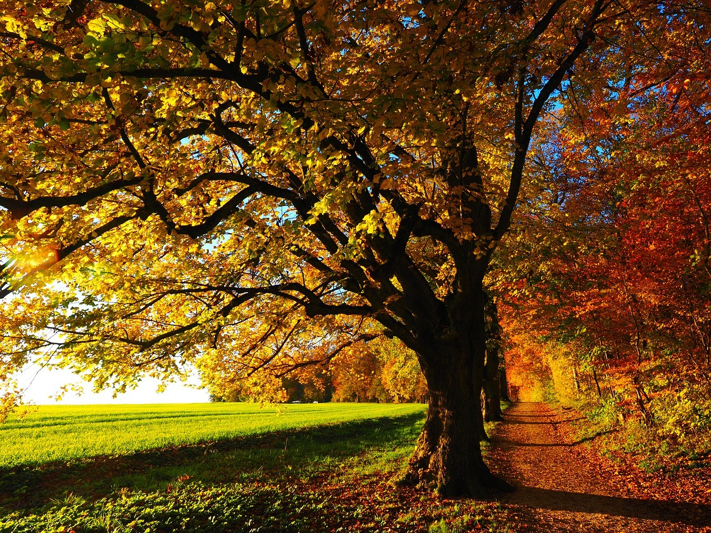
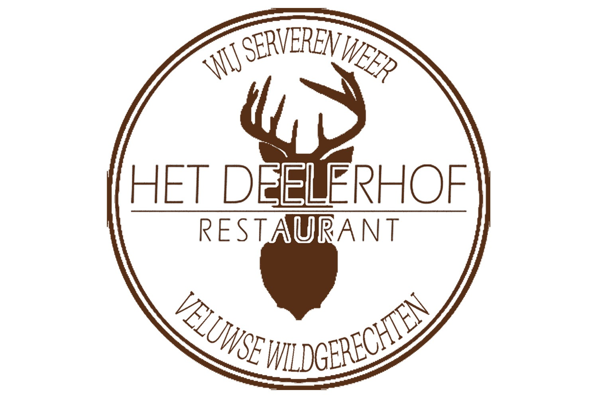
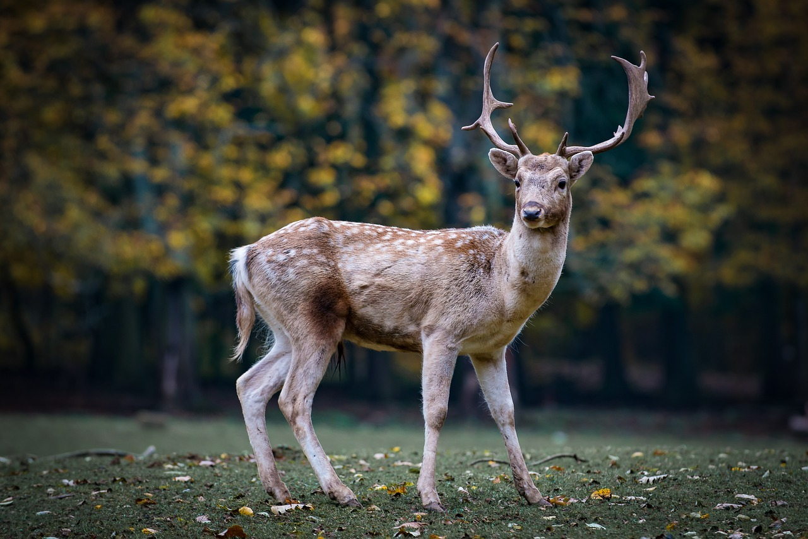
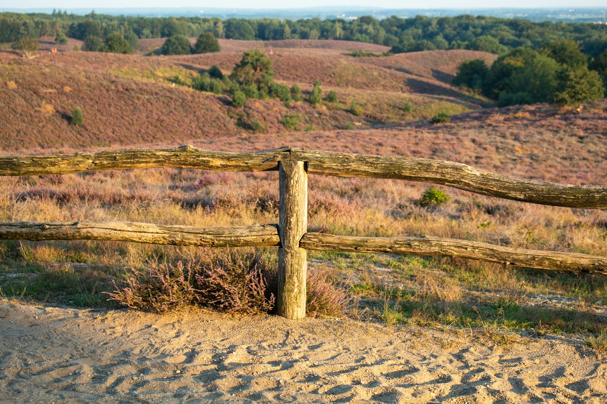

Proef de smaak van de Veluwe
Eerst lekker wandelen of fietsen in de prachtige natuur, daarna aan tafel. Lunch en diner in het hart van Hoenderloo, binnen of op ons zonnige terras.

Wildkaart vanaf 15 oktoberWelkom bij Het Deelerhof
Voor een lekkere lunch of een heerlijk diner kunt u bij ons terecht. Lekker binnen in het restaurant, of buiten op ons prachtige zonnige terras, rijkelijk voorzien van goede parasols.
Met regionale ingrediënten brengen wij de ouderwetse smaak van Veluwse streekproducten op tafel. Klassiek geserveerd, herkenbaar en toegankelijk voor iedereen.
Iets te vieren? Voor gezelschappen vanaf 35 personen presenteren wij in overleg een heerlijk buffet op maat.
- Lunch12:00 tot 16:00
- Diner17:00 tot uiterlijk 20:00
- WaarKrimweg 35, tegenover het Deelerwoud
De kaart
Alle prijzen in euro's, onder voorbehoud van wijzigingen en fouten. Heeft u een allergie? Meld het ons, dan denken we graag mee.
Lunch van 12:00 tot 16:00 uur.
Soepen met stokbrood
- Tomatensoep
- 8,75
- Mosterdsoep
- 8,75
- Franse uiensoep
- 8,75
Verse tomaten, vleugje room
Drie soorten mosterd, vleugje room
Ui, rode wijn, spekjes en het geheim van onze kok
Twaalf uurtje
- Twaalf uurtje
- 17,95
Compleet gerecht: kop tomatensoep, boterham met kaas en boterham met kroket
Eiergerechten
- Uitsmijter
- 14,50
- Omelet
- 15,50
- Boerenomelet
- 16,95
Drie eieren, twee boterhammen, ham of kaas of ham & kaas
Ham, kaas of ham & kaas, twee boterhammen en boter
Champignons, paprika, ui, spek, twee boterhammen en boter
Vegetarisch
- Twee kaaskroketten
- 15,95
- Vegetarische omelet
- 16,95
Twee licht pittige, twee boterhammen en boter
Champignons, paprika, ui, twee boterhammen en boter
Salades met stokbrood, boter en dressing
- Mediterrane
- 25,95
- Varkenshaas
- 26,95
- Zalmfilet
- 26,95
Gemengde sla, feta, olijven
Gemengde sla, in de pan gebakken medaillons van varkenshaas
Gemengde sla, in de pan gebakken filet van zalm
Tosti's
- Ham & kaas
- 7,75
- Hawaï
- 8,75
Ham, kaas, ananas
Stokbroodjes koud
- Jong belegen kaas
- 9,50
- Carpaccio
- 15,50
Dun gesneden rundercarpaccio, truffelmayo, Parmezaanse kaas
Stokbroodjes warm
- Hoge Veluwe
- 15,50
- Pulled pork
- 15,50
Gebakken champignons, ui, ham, paprika en kruiden
Langzaam gegaard varkensvlees, sla, homestyle barbecuesaus
Clubsandwiches
- Boerenachterham
- 17,95
- Gerookte zalm
- 18,95
Ham, kaas, spek, sla, komkommer, ei, kerriemayonaise
Gerookte zalm, sla, komkommer, ei, dillemayonaise
Gerechten met brood
- Twee kroketten
- 15,50
- Twee kaaskroketten
- 15,95
Twee boterhammen, boter, mosterd
Twee boterhammen, boter, mosterd
IJsgerechten
- Kinderijsje
- 8,95
- Vanille-ijs
- 9,95
- Kaneelijs
- 9,95
- Grootmoeders ijs
- 9,95
Klein ijsje, leuk versierd, met een kleine verrassing
Vanille schepijs, echte slagroom
Kaneel schepijs, karamelsaus, amandelen, echte slagroom
Vanille schepijs met advocaat, boerenjongens, echte slagroom
Diner vanaf 17:00 uur, keuken tot uiterlijk 20:00 uur. Warme hoofdgerechten worden geserveerd met gemengde salade, gebakken aardappelen, frites en fritessaus.
Soepen
- Tomatensoep
- 8,75
- Mosterdsoep
- 8,75
- Franse uiensoep
- 8,75
Lichtgebonden groene soep van drie soorten mosterd. Vegetarisch geschikt
Ui, rode wijn, spekjes en het geheim van de kok
Voorgerechten
- Runder carpaccio
- 15,50
- Gerookte zalmfilet
- 16,50
Flinterdun gesneden rundvlees, rucola, pijnboompitten, verse Parmezaanse kaas, truffelmayonaise, toast en boter
Koudgerookte getrancheerde zalmfilet, kappertjes, sla, dillemayonaise, toast en boter
Maaltijdsalades met frites en fritessaus
- Salade Mediterrane
- 24,95
- Salade varkenshaas medaillons
- 27,95
- Salade zalmfilet
- 27,95
Diverse slasoorten, tomaat, komkommer, rode ui, feta, olijven. Vegetarisch geschikt
Gebakken medaillons van varkenshaas
Gebakken zalmfilet
Hoofdgerechten
- Wiener schnitzel
- 24,95
- Lakenvelder burger
- 26,95
- Vegetarische burger
- 26,95
- Zalmfilet met dillesaus
- 27,95
- Varkenshaas medaillons met champignonsaus
- 27,95
- Hollandse biefstuk met pepersaus
- 28,95
- Veluwse runderstoofpot
- 28,95
- Vegetarisch potje
- 28,95
Klassieke schnitzel op Weense wijze, in de pan gebakken
Brioche bol, burger van het Lakenvelder rund, sla, geglaceerde ui, tomaat, wittekoolsla, homestyle barbecuesaus
Brioche bol, vegetarische burger, sla, geglaceerde ui, tomaat, wittekoolsla, homestyle barbecuesaus
Verse zalmfilet, in de pan gebakken, zachte dillesaus
Twee malse medaillons, romige bospaddenstoelensaus
Kogelbiefstuk, in de pan gebakken, pittige pepersaus
Gebonden ouderwets rundvleesgerecht, ui, paprika, champignons
Stoofpotje met vleesvervanger Quorn. Vegetarisch geschikt
Nagerechten
- Chocoladetaartje
- 9,95
- Vanille-ijs
- 9,95
- Kaneelijs
- 9,95
- Grootmoeders toetje
- 9,95
Stevig, met slagroom. Op is op
Traditioneel, met slagroom
Karamelsaus, amandelschaafsel, slagroom
Vanille-ijs, boerenjongens, advocaat, slagroom
Veluwse wildgerechten, vanaf 15 oktober 2026. Hoofdgerechten met gemengde salade en bijpassende wildgarnituur, zoals stoofperen, spruiten en aardappelpuree.
Soepen
- Bospaddenstoelensoep
- 9,95
- Wildbouillon
- 9,95
Zacht gebonden soep op basis van verschillende paddenstoelen
Donkere herfst- en winterbouillon op basis van wild en kruiden
Hoofdgerechten
- Wild zwijn tournedos
- 32,50
- Hazenpeper
- 32,50
- Hertenbiefstuk
- 32,50
Twee stukjes vlees van het wilde zwijn, Veluwse jachtsaus
Klassiek Veluws kruidig wildstoofpotje, voor de liefhebber van een donkere wildsmaak
Twee stukjes wildbiefstuk, rodewijnsaus
Nagerechten
- Vruchtenstrudel
- 9,95
- Walnotenijs
- 9,95
- Mozart Chocolate Coffee
- 9,95
Warme strudel met rood fruit, vanille-ijs, slagroom
Walnotenijs met slagroom
Dessertkoffie met Mozart Chocolate koffielikeur, bruine suiker, slagroom
Driegangen wildmenu
- Drie gangen van de wildkaart
- 48,50
Voordelig als menu. Niet te combineren met gerechten van andere kaarten
Erbij geschonken
- Arithmetics Shiraz Cabernet
- 5,95
- Brand Dubbelbock
- 4,95
Wijnadvies, per glas. Per fles 32,50
Bieradvies, per flesje
Voor kinderen tot ongeveer 12 jaar.
Kinderplates
- Kroket
- 9,50
- Frikandel
- 9,50
- Kipnuggets
- 9,50
- Kipschnitzel
- 10,50
- Kibbeling
- 10,50
Met frites, sla en appelmoes
Met frites, sla en appelmoes
Met frites, sla en appelmoes
Met frites, sla en appelmoes
Met frites, sla en appelmoes
Nagerecht
- IJsje met een verrassing
- 6,95

Wij serveren weer Veluwse wildgerechten
Vanaf 15 oktober 2026 staat de wildkaart weer klaar. Wild zwijn tournedos met Veluwse jachtsaus, klassieke hazenpeper en hertenbiefstuk met rodewijnsaus, met stoofperen, spruiten en aardappelpuree erbij.
Driegangen wildmenu € 48,50

Iets te vieren?
Een verjaardag, jubileum, bruiloft of gewoon een gezellige middag of avond: van brunch tot een luxe koud en warm buffet. Huisgemaakt, ambachtelijk en op maat, in overleg met u. Voor gezelschappen vanaf 35 personen.
- Brunchbuffet
- Luxe hapjesbuffet
- Stamppotbuffet alleen in de wintermaanden
- Bourgondisch buffet
- Luxe koud en warm buffet
Bel ons gerust vrijblijvend, dan maken we samen een buffet dat bij uw gezelschap past.
Bel (055) 378 17 21Midden op de Veluwe
Hoenderloo is een klassiek Veluws dorp tussen Apeldoorn en Arnhem. Wandelaars en fietsers lopen zo bij ons het terras op, en in de buurt is ook voor kinderen veel te doen.
- Trekvogelpad en Marskramerspadlopen langs ons terras
- Het Deelerwoudtegenover het restaurant, om te wandelen en te fietsen
- Nationaal Park De Hoge Veluweop enkele honderden meters, met het Kröller-Müller Museum en jachtslot Sint Hubertus
- Apeldoorn10 km, met Apenheul en de Julianatoren
- Arnhem10 km, met Burgers' Zoo en het Openluchtmuseum

Openingstijden
1 oktober tot en met 31 december 2026
| Maandag | vanaf 12:00 |
|---|---|
| Dinsdag | gesloten |
| Woensdag | gesloten |
| Donderdag | gesloten |
| Vrijdag | vanaf 12:00 |
| Zaterdag | vanaf 12:00 |
| Zondag | vanaf 12:00 |
Keuken lunch 12:00 tot 16:00. Keuken diner 17:00 tot uiterlijk 20:00. Vanaf 17:00 uitsluitend diner.
Feestdagen
Gesloten op kerstavond 24 december, eerste en tweede kerstdag, oudejaarsdag 31 december 2026 en nieuwjaarsdag 1 januari 2027.
Goed om te weten
Wij rekenen uitsluitend per tafel of groep af; een gescheiden nota per persoon is niet mogelijk.
U betaalt contant, met pin (bankpas, Maestro) of creditcard (Mastercard, Visa).
Allergie? Meld het ons bij het bestellen.
Reserveren en route
Bel ons voor een tafel, een gezelschap of een vraag over de kaart. Mailen kan natuurlijk ook.
Restaurant Het DeelerhofKrimweg 35
7351 AV Hoenderloo
(055) 378 17 21
info@deelerhof.nl
Volg ons op Facebook
Werken bij Het Deelerhof
Op dit moment hebben we geen openstaande vacatures, maar een open sollicitatie is altijd welkom. In het algemeen zoeken we een zelfstandig werkende kok (fulltime of parttime), bediening (fulltime of parttime, vanaf 16 jaar) en hulp in de afwas (vanaf 15 jaar). Stuur een mail naar info@deelerhof.nl.